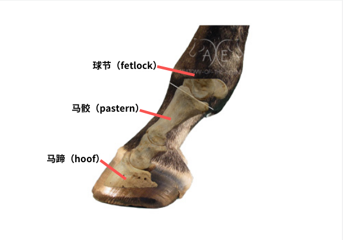

状态：
- 2019.12.31，开始，边译边读.
- 2020.01.13，已译 1 章，共 9 章.
- 2020.01.16，已译 2 章，共 9 章.
- 2020.01.23，英文版整体读完.
TODO：
- 译完.
- 公开发表. 译完前不要公开发表，以免不受掌控.
- 对照中文译本统一专有名词，比如职业名.
- 对照德语、波兰语再详细校对一次.
- 翻译前言.
原文题目 “Droga, z której się nie wraca”，是 Andrzej Sapkowski 用波兰语写成，后被翻译为德语出版，题目为 “Der Weg, von dem niemand zurückkehrt”，德语版是目前这篇文章唯一的官方翻译版本. 后来有粉丝 Tina B. 把德语翻译为英语，题目为 “The Road With No Return”，文件在这里⧉，这个链接是在这里⧉找到的. 我的这篇中文翻译，就是从这篇英文版翻译而来的. 跨越这么多个语种接连翻译，难免出现问题，麻烦波兰语、德语、英语大佬看到任何我译错或稍稍翻译得不好的地方都多多向我指正. 这篇文章只是我个人作为猎魔人粉丝的自愿行为，且是在[目前没看到官方授权中文版翻译]的背景下完成的，如有侵权行为请及时告知我.（未来如果有出版商购买了版权，本着减少重复劳动的原则，我欢迎所有合作，且所有直接抄袭的行为我必将追究到底.）一些翻译后可能变得更加难以理解的地方我做了（[尽量少但可能还是多余的]补充）.
对已有的译名参照了暂译表⧉、《巫师》世界常用专有名词中英译名表⧉和已经出版的《猎魔人》系列（重庆出版社版本），争取做到译名的一致性. 很多地方包括背景和其他相关的故事情节也参看了猎魔人中文维基⧉，具体已经没法一一列出了. （百度贴吧）叶奈法吧：开个贴翻译猎魔人小说的无尽之路⧉这篇帖子在 2018 年 4 月翻译了第一章和第二章开头的内容，容易对比出这位吧友也是用的同样的英语原文. 但其翻译质量一般，我还是对同样的内容重新又译了一遍，稍稍做了参考，也表示感谢.
人名对照（按出现顺序）：
- 薇森娜-Visenna
- 科林-Korin
- 弗雷吉纳尔-Fregenal
- 托平-Topin
地名对照 中文-英语-德语-波兰语（按出现顺序）：
- 雅鲁加河（亚鲁迦河）-Yaruga-Jaruga
- 艾娜河-Ina
- 克拉马特道-Klamat
- 马耶纳-Mayena
- 关键镇-Key-Schlüssel-Klucz
- 角石区- Hornstone
- 绿石区-Greenstone
- 阿梅尔山脉-Amell
专有名词：
- 科什切伊-koshchey
- The Circle “那个环”
- mistress
- mage 法师
- sorcerer 术士
- sorceress 女术士
第一章 ¶
停在薇森娜肩膀上的全身彩色羽毛的鸟开始大叫，拍打着它的翅膀，飞升起来滑进灌木丛中了. 薇森娜勒住马，听了一会儿，然后继续小心地沿着森林中的小路前进.
男人像是睡着了. 他坐靠着十字路口中的一根杆子. 薇森娜走近时，发现他的眼睛是睁开的. 甚至在这之前，她就注意到他受了伤. 覆在他左肩和大臂上的临时的绷带浸在尚未变黑的血液中.
“你好，小伙儿.” 受伤的男人吹响嘴里的长杆形状的草，并把它吐了出去. “你骑马去哪里？如果可以问的话.”
薇森娜不喜欢这个“小伙儿”. 她拉下她的风帽.
“可以问，”她回应到，“不过这种好奇应该有正当的理由.”
“抱歉，夫人，”男人边说边眯起了眼，“你穿着男人的衣服（所以我刚刚称呼你为“小伙”了）. 至于好奇：有非常正当的理由！这里是一个不寻常的十字路口. 在这里一个有趣的奇遇降临在我头上…”
“我知道了.” 薇森娜打断他，注视着那个静止的、不正常弯曲的人影，那个人影半藏着躺在灌木中，离杆子不超过十步远.
男人也朝同样的方向看去. 他们的目光汇聚到一起. 薇森娜假装向后顺她的头发，手摸藏在蛇皮发带下面的王冠.(Visenna acted as if she were brushing back her hair and touched the diadem that was hidden under the snakeskin headband.)
“啊，是的，”受伤的男人镇静地说，“那儿有一具尸体，你的眼睛很敏锐. 你一定认为我是土匪，我说得对吧？”
“你不是.” 薇森娜说，她没有把手从王冠上拿下来.
“啊…” 男人呻吟道，“确实. 好吧…”
“你的伤口正在流血.”
“大多数伤口都有那种奇怪的特性.” 有伤的男人微微笑了一下. 他有一口漂亮的牙齿.
“只用一只手把绷带裹上，那伤口的血还要流好一会儿.”
“也许可以请你赏脸帮个忙？”
薇森娜跳下马，她的鞋跟在柔软的地面上留下深深的痕迹.
“我叫薇森娜，”她说，“我不给任何人赏脸，我也不欢迎别人以这样的姿态对待我. 不过我还是会医治你的伤口. 你能站起来么？”
“能. 我非得站起来么？”
“不用.”
“薇森娜，”男人一边稍微伸展手臂以便让她更容易地解开绷带一边说，“一个好听的名字. 薇森娜，有没有人说过你头发很漂亮？是红棕色，对吧？”
“不. 是草莓红色.”
“啊. 等你弄完后，我会给你一束生长在那边沟里的羽扇豆. 在你医治我时，为了打发时间，我会告诉你发生在我身上的事. 你知道的，我和你来到这里走的是同样的路，我在十字路口看到一根杆子. 是的，就是这根. 在这根杆子上，有一块板子. 你弄疼我了.”
“大多数伤口都有那种奇怪的特性.” 薇森娜撕下最后一层绷带布，甚至没有格外小心一点.
“正确，我忘了. 我刚说到…啊，对了. 于是我走1近一点，看看板子上写着什么. （那字写得）真是太笨拙了，我曾认识一个弓箭手，他在雪地里撒尿写出的字母都要更漂亮些. 我读到……（你手里拿着的）那是什么，夫人？那是什么石头？哦，他妈的，我可不希望是那种东西.”
薇森娜用赤铁矿轻轻地在伤口上滑动，血立刻止住了. 她闭上眼睛，用双手紧握男人受伤的手臂，把伤口的边缘紧紧按在一起. 她松开手——组织已经长在了一起，只剩下一道弯弯曲曲的红色的疤痕.
男人没有说话，专心地注视着. 最后他小心地举起手臂，伸开，抚摸着伤疤，摇了摇头. 他调整了一下血淋淋的衬衫和紧身衣，站起身来，用剑挑起皮带、装钱的荷包和水壶. 皮带搭扣的形状是一个龙头.
“好吧，这就是你们称之为运气的东西，”他说话时目光没有离开薇森娜，“我在这荒郊野外遇到了一个治疗师，就在雅鲁加河和艾娜河交汇的地方，在这里更容易遇到一个狼人，或者更糟糕点，遇到一个喝醉了的伐木工. 我该为这次治疗付多少钱呢？我现在手头有点紧，一束羽扇豆够么？”
薇森娜没理这个问题，她走近杆子，抬起头——那块板子钉在与一般男人眼睛齐平的高度.
“‘从西边来的你，’”她大声朗读，“‘左转你会返回，右转你也会返回. 但直走，你将一去不回.’2 胡说八道.”
“我正是这样想的，”男人一边拂去裤腿上的松针一边说，“我了解这一片地方. 直走，也就是往东，朝向商路，你会走到克拉马特道. 为什么去那里就回不来了呢？因为漂亮女孩儿们等着嫁人？因为酒水很便宜？还是因为镇长的就职典礼？”
“你离题了，科林.”
男人吃惊地张大了嘴巴. “你怎么知道我名字是科林的？”
“你自己刚刚说过. 继续讲.”
“我说过？”男人不敢相信地仔细端详着她. “真的么？好吧，也许…我说到哪儿了？啊！于是，我读了那些字，然后正自己寻思是哪个傻瓜要那么写. 突然，我听见有人在我后面嘀里嘟噜地低声说着什么，我向后一看，看见了一个丑陋的老太婆，灰头发，驼着背，当然啦，拄着一根拐棍. 我礼貌地问她怎么了，她嘟囔着，‘亲爱的骑士，我饿了，从早上我还没咬过一口东西.’我想，这么说来这个老太婆至少还剩一颗牙齿. 我非常受触动（我于心不忍），所以我从我的小背包里拿了一块面包和一对半熏的鳟鱼3给了老妇人，那鳟鱼是我在雅鲁加河上从一个渔民那里收下的. 她坐下来，咀嚼、发出像青蛙一样低沉沙哑的声音4、吐着鱼刺，我则一直在看那个奇怪的路标. 突然老妇人说：‘小骑士，你是一个好人，你救了我，应该得到回报.’我刚想让她知道她以后可以把回报放在哪儿，但那个老太婆说：‘离我近一点，我有些话要在你耳边悄悄地说，是一个重要的秘密，关于你如何能帮助好人解决困难，树立好名誉、交到好运气.’”
薇森娜叹了口气，在受伤男人的身边坐下. 她喜欢他，高高的个子、金色的头发、瘦削的脸和明显的下巴. 他不像她遇到的其他男人那样散发着难闻的臭味. 她独自一人在森林和乡间小道上漫无目的地闲逛已经太久了——但她打消了这个不断出现的念头.
科林继续着他的故事：“哈，我想，这是一个绝佳的机会. 如果这个老太婆还没有得硬化症脑子还好使的话，那这对于一个穷武士来说也许是有用的. 我弯下腰，伸长脖子，就像一个笨手笨脚的傻瓜. 要不是我的本能反应，她就直捣我的喉咙了. 我往后跳了一步，鲜血从我胳膊上夸张地涌出来，就像城堡里的喷泉，但那个老太婆激动地挥舞着小刀，大喊大叫着，气急败坏地吐着唾沫. 我觉得情况还不算危险. 我走近一点，以便占据有利，这时我发现她根本不是一个年老的老太婆. 她的乳房部像燧石一样坚挺……”
科林瞟了一眼薇森娜想看看她有没有涨红了脸. 薇森娜正带着礼貌的兴趣听着.
“我说到哪儿了……啊. 我本以为我能把她推翻在地并缴了她的武器，但没有机会. 她就像猞猁一样强壮. 我注意到她的手——她握着小刀的手——随时都有可能从我的手中挣脱出去. 我该怎么办？我把她推开，抽出剑来……她就那么自己往我的剑上撞了过来.”
薇森娜安静地坐着，手扶前额，就好像随手调整了一下她的蛇皮发带.
“薇森娜？我说的都是实情. 我知道那是一个女人，我觉得很蠢，但如果（我不小心杀掉的）那是一个正常的女人我会去死的. （可她不正常，）就在她倒下以后，她变形了. 她变得更年轻了.”
“是幻象.” 薇森娜若有所思地说.
“什么？”
“没什么.” 薇森娜站起身，走向在蕨类灌木丛里躺着的尸体.
“看.” 科林走上前去. “一个少女，就像城堡喷泉里的雕像. 但她曾经驼着背，满脸的皱纹就像一个一百岁的婆娘的屁股. 如果……”
“科林，”薇森娜打断了他，“你的胃很健壮么？”
“嗯？我的胃和这有什么关系？不过你感兴趣的话——（我的胃不坏，至少）我不能抱怨（我的胃）.”
？？？？它不会让我抱怨？？？？？
薇森娜摘下头带. 王冠上镶着的宝石在牛奶般昏暗的太阳余晖中微微发出黯淡的光. 她在尸体前站定，伸出手，闭上眼. 科林看着，他的嘴巴打开到一半. 薇森娜轻轻地点了点头，小声说着一些他不能理解的东西.
“Grealghane!”5她突然大声地喊.
灌木丛剧烈地动了起来. 科林向后一跳，抽出他的剑，保持起防御的姿势. 尸体开始抽搐.
“Grealghane! 说话！”
“啊啊啊啊啊啊啊！”一阵嘶哑的、肿胀的6尖叫声从灌木丛中传来. 尸体弯曲起来，几乎漂浮在了空中，只有它的后背和头部还接触着地面. 尖叫声渐渐消失，变为了低沉的口吃、断断续续的叹息和叫喊，这声音慢慢地有了音调但完全不可理解. 科林感到后背流下了一股冷汗，像一只缓慢爬行的毛毛虫刺激着他. 他攥紧拳头以抵制掌心中的刺痛，用尽他全部的力量与[飞奔逃进森林深处的压倒性的冲动]抗衡着.
“Oggg……nnnn……nngammmmm”，尸体一边结结巴巴地说着什么，一边用它的指甲扣着地面，血泡从它嘴里涌出，又在它的嘴唇上爆裂. “Nam……eeeggg……”
“说话！”
一道浑浊的光线从薇森娜伸出的手上渗透出来，那光线中尘土在飞扬、在累积. 干枯的树叶和树枝从灌木丛中迅速堆积起来. 那尸体呛住了7，开始咂它的嘴唇，然后，突然间，它说话了. 说得还算是人话.
“源头以南六英里处十字路口. 顶多. 送……送达. ‘那个环’. 一个小伙子. 杀……杀……杀掉. 命令.”
“谁？”薇森娜大吼. “谁下达的命令？说话！”
“弗……吉……吉纳尔. 所有的信件，好几张信纸，戒指，护……护身符.”
“说话！”
“……山口. 科什切伊. 吉……吉纳尔. 收到信. 羊……皮纸. 他来自马！耶！纳！！！”
结结巴巴的声音开始发颤，化为可怕的哭声. 科林再也受不了了，他扔掉剑，闭上眼，双手捂住他的耳朵. 他站在那儿，直到感觉有人在触碰他的胳膊. 他剧烈地颤抖起来，浑身都在颤抖，就好像有人打了他的生殖器.
“结束了.”薇森娜说. 她擦干自己额头上的汗水，“我已经问过你的胃了.”
“这是什么样的一天啊.”科林呻吟着说. 他捡起剑，收入剑鞘，小心翼翼地不让自己往已经静止的尸体那个方向瞥. “薇森娜？”
“怎么？”
“让我们离开这儿. 离这个地方越远越好.”
第二章 ¶
他们一起骑着薇森娜的马，走在杂草丛生、坎坷不平的林间小路上. 她坐在前面的马鞍里，科林坐在她身后的马屁股上，他的手臂环抱着她的腰. 薇森娜早就习惯于不多加思考地享受命运带给她的便利，所以她满足地靠在男人的胸膛上. 两个人都保持沉默.
将近一个小时之后，科林率先说了话，“薇森娜.”
“怎么了？”
“你不仅仅是个治疗师. 你来自‘那个环’？”
“是的.”
“通过那个……表现来看，（你是）一个女超人？或译有能力的人，mistress…….”
“是的.”
科林放开了她的腰转而用手抓住马鞍的鞍桥. 薇森娜生气地眯起她的眼睛. 当然他没有看到.
“薇森娜？”
“怎么了？”
“你能理解那个……说的话么？”
“不太能.”
他们再次陷入沉默. 一只从他们上方飞过树木枝叶的彩色的鸟大声地叫着.
“薇森娜？”
“科林，帮我个忙.”
“嗯？”
“别说话了. 我要思考.”
森林小路把他们带下了一个溪谷，带到一条浅浅的溪流的河床上，那条小溪在石头和黑树干之间蜿蜒曲折. 空气中弥漫着浓浓的薄荷和荨麻的味道. 石头上覆盖着粘土和淤泥，马偶尔会在上面打滑. 为了不摔下来，科林再次把手环在薇森娜的腰间. 他独自一人在森林和乡间小路上漫无目的地闲逛已经太久了——但他打消了这个不断出现的念头.
第三章 ¶
定居点是一个平常的路边小镇，紧贴山腰，房子都是稻草和木材的，很脏，掩蔽在弯曲的篱笆中间. 他们骑马离得近些时，狗开始吠叫. 薇森娜的马在路的中间艰难地往前走着，不理会那些热心的杂种狗，那些狗扬着口鼻、对着它的马骹8流着口水.
最开始，他们没看见任何人. 然后，从篱笆后面、从通往农舍的小路上，居民们出现了——他们慢慢地靠近，赤着脚，摆着邪恶的表情. 他们手持干草叉、木棍和梿枷，有人弯下腰，捡起一块石头.
薇森娜勒住马，举起一只手. 科林看向她手里的东西，她拿着一把镰刀状的小金刀.
“我是一个治疗师.”她用清晰浑厚的声音说到，但绝不响亮.
农民们放下武器，互相交换眼神，嘀咕起来. 越来越多的人来了. 离得最近的那些人摘下了帽子.
“这个定居点叫什么名字？”
“关键镇.” 短暂的安静后声音从人群中传出.
“你们的镇政官是谁？”
“是托平，女阁下. 在那儿，那间小房子.”
还没等他们动身，一位怀抱婴儿的妇女从村民的队伍中挤了过来. “女超人……..mistress”，她小心地扶着薇森娜的膝盖，呻吟到，“我的女儿……她正发着烧……”
薇森娜从马鞍上跳下来，摸了摸孩子小小的脑袋，闭上眼睛.
“她明天就会康复的. 别把她裹得太紧.”
“谢谢你，女阁下……千恩万谢……”
托平——镇政官——已经在院子里了，思考着要用手里拿着的干草叉做点什么. 最终，他用它把[被鸡弄乱的台阶]打扫干净.
“别介意，”他把叉立在墙边，说到，“夫人. 还有您，大人. 世道险恶……请进来吧. 让我们来招待你们.”
他们走了进去.
托平的妻子端上炒蛋、面包和牛奶，她被两个亚麻色头发的女孩儿拉着，那两个女孩紧紧拽着她们妈妈的围裙系带. 随后她便进到她自己的房间里去了. 薇森娜什么都没吃，闷闷不乐、一声不响，和科林形成了鲜明的对比. 托平转转眼睛，浑身上下抓挠了好几处，说道：
“世道险恶. 险恶啊. 我们过得不好，夫人. 我们养羊，羊毛应该是用来卖钱的，但是因为没有商人，我们只好宰羊. 我们宰羊是为了餐桌上能有食物. 在过去，商人们会在角石区和绿石区周围游历，然后穿过山口，进到阿梅尔山脉，那里分布着矿坑. 他们在那里开采角石. 当商人们经过（我们这里）时，他们也会拿走羊毛，付（给我们）钱并留下一些其他的货品. 而现在再也没有商人了. （现在我们这里）甚至没有盐，无论我们宰了什么（牲畜），都得在三天内吃完.”
-
男人说话讲发生了什么时，一直都在用一般现在时，极偶尔使用过去时，不知道是英语翻译者的个人问题还是作者就是故意为了表现他是个粗人，这也许需要我对照德语或波兰语看一看了. ↩︎
-
这句话可能是改编自一个著名的童话故事，在《猎魔人6：雨燕之塔》的第二章，希瑞想去雅鲁加河，她离开耗子帮追上霍斯珀恩 时，霍斯珀恩 也说了类似的话. 原文为，“如您所见，我们正站在十字路口. 十字路口，四个方向，您必须做出正确的选择……就像那个著名的童话故事. 如果往东，你将一去不返……往西，你也将一去不回……往北……唔唔……从这儿往北，等待您的便是特赦 ……”（摘自重庆出版集团，小龙、乌兰的译本.） ↩︎
-
half a smoked brace. 找了好久，在这里⧉发现 brace 有 a pair of trout 的意思. ↩︎
-
英语里就是 croak 一个单词，这里只好很啰嗦地翻译成“发出像青蛙一样低沉沙哑的声音”. ↩︎
-
这是一句咒语，就不翻译了. ↩︎
-
英文是 tumescent cry，这个 tumescent 的意思是“（尤指由于性冲动而）胀大的”，实在不能理解放在这里是什么意思. 也需要看德语或波兰语原文. ↩︎
-
英语原文是“chocked”，我怀疑是打错了，应为“choked”，应对照德语或波兰语查看. ↩︎
-
马骹（pastern）是马蹄（hoof）和马的球节（fetlock）中间的那个部分. 可以参考这里⧉的这张图：
 ↩︎◉ 图. 马骹